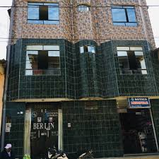
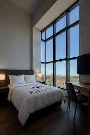
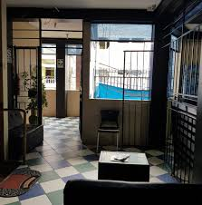

HOSPEDAJE
Dónde Quedarse en Huarmaca
Opciones de alojamiento para tu visita

Hospedaje Berlín
Mz. L Lote 17 A.H José Carlos Mariátegui
Baño privado, agua caliente, TV cable
WiFi, acepta Yape

Hotel Rallán
Ubicación céntrica, cerca de la plaza de armas
Habitaciones modernas
Restaurante en el hotel, excelente servicio

Hospedaje Lucero
Prolongación Miguel Grau (cercano al centro)
Habitaciones básicas
Opción económica funcional
Comodidad
Habitaciones limpias y confortables para descansar después de explorar la ciudad.
Hospitalidad
La calidez de la gente huarmaquina te hará sentir como en casa.
Precios Accesibles
Opciones para todos los presupuestos sin sacrificar la calidad.